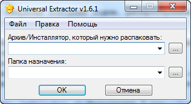
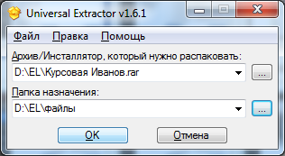
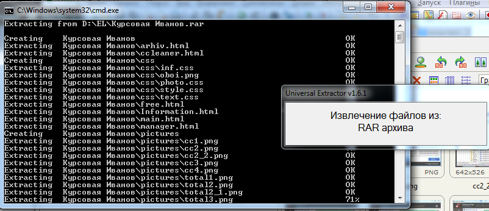
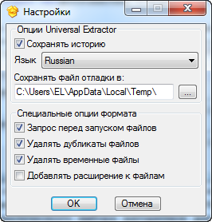
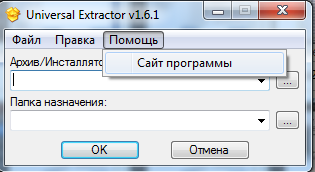

Universal Extractor - простая программа для извлечения данных из инсталляторов приложений, msi-установщиков, самораспаковывающихся EXE-файлов и архивов практически любых типов. Поддерживаются файлы .rar, .7z, .exe, .ace, .arc, .arj, .exe, .bin, .cue, .bz2, .tbz2, .tar.bz2, .cpio, .deb, .gz, .tgz, .tar.gz, .img, .cab и др. Не предназначена для архивации.
Окно утилиты еще проще, чем её возможности. При запуске перед нами представляется маленькое окошко со своей единственной функцией распаковки архивов:

Попрубем распаковать выбранный нами архив. Сначала выбираем путь к архиву, затем указываем путь куда распакуется составляющие архива:

Нажимаем ОК, после у нас открывается комнадная строка, и начинаются по одному извлекаться содержимое архива. После завершения все автоматически закрывается, Universal Extractor в том числе:

Настройки Universal Extractor представляется собой самые обыкновенные выборы. Можно сохранять истории выбранных ранее путей. Поддеживается множество языков.
Можно указать путь сохранения файлов отладки. И простые опции формата: удалять дубликаты/временные файлы, добавлять к ним расширения:

Во вкладке помощь у нас отсутствует справка или о программе, но зато можно сразу попасть на сайт программы, где можно прочитать подробно про описание Universal Extractor

В вывод можно сказать, что Universal Extractor плох тем, что у него лишь одна возможность - извлекать данные. Не полноценный архиватор, не позволяет сжимать данные.
Но плюс Universal Extractor в том, что позволяется работать со множествами форматами архивов, тем самым позволяется распаковать любой архив или извлечь данные из инсталляторов приложений.
Подробно про Universal Extractor можете разузнать официальном сайте разработчиков: https://www.legroom.net
Наверх